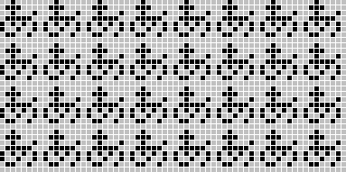
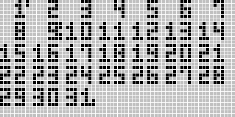
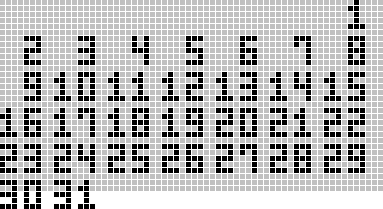
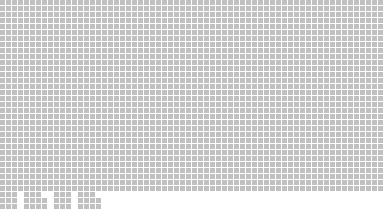
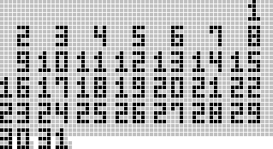
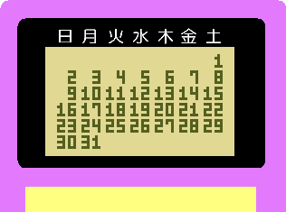

電子手帳
むかーし、むかし。電子手帳というものがあったそうな。
今でもあるけど、今は「ぴーでーえー」なんて横文字で呼んだりして、過去の「電子手帳」という呼び名の方がカッコよくて自分は好きだ。大体皆PDAが何の略か知らないだろう。なにせ自分も知らないのだ。
その電子手帳が「ちょっと高価な子供のおもちゃ」になりだした頃の話。
思い出深い電子手帳を紹介しよう。カシオから発売されていた電子手帳だ。
友人が持っていたものなので名前は知らない。ネットで検索しようにも名前を知らないのでどうしようもない。誰か知っていたら教えて下さい。
後継機に「ツインゴール」なんてのもあった気がするがこちらもネット上に情報が無い。これはレースゲーム(多分)とサッカーのPKゲームが遊べるのでツインゴールらしい。
※'07.1/21 TCHさんから情報を頂いた。「バトルリーグ」というらしい。PKゲームが出来る後継機に「PKバトルリーグ」があり、こちらも別の友人が持っていた気がする
機能は定番の電話帳・カレンダー(スケジュール帳)・電卓。それに子供向けだから占いやらゲーム。
この電子手帳はひらがなが4行表示できる。つまり縦32ドットだ。
※あとで分かったのだが横幅は64ドットでなく96ドットだったようだ。

ほとんどの表示は8*8単位なのだが、例外がカレンダー。

こんな感じに3*5の数字を使っている。数字横の点はスケジュールがあることを示す。これだとさすがに数字が見にくいからもしかすると点滅していたのかもしれない。※横幅を間違っていただけ。
※そういえば横に月表示もあった。そのうち図を書き直す。
さて、ここで疑問に思うことはないだろうか?
そう、カレンダーの最大行数は6行。数字は縦5ドット。つまり5*6+隙間5ドットで35ドットとなり、画面をオーバーしてしまう。

それでどうなっているかというと簡単なことで、その分のドットがきちんと用意されている。
しかし極限まで無駄を切り詰めているのでとんでもない形になっている。
私の記憶が確かならば…

こうである。
もう惚れちゃいますね。
ここに、

こうなるわけだ。
ところで、これでは日付の表示に画面全部を使ってしまい、曜日が表示できない。
分かりづらくないかって?
大丈夫。

本体の方に書いてあるから。
※以上の内容は全て私の子供時代の記憶によります。間違っている可能性が多分にありますのでご注意ください。